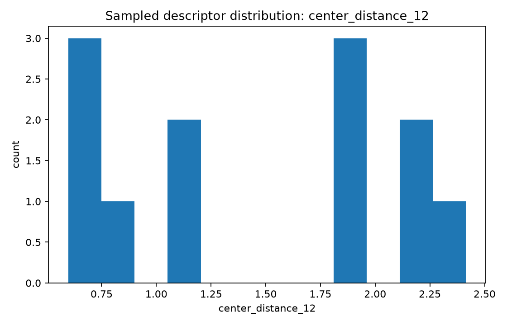
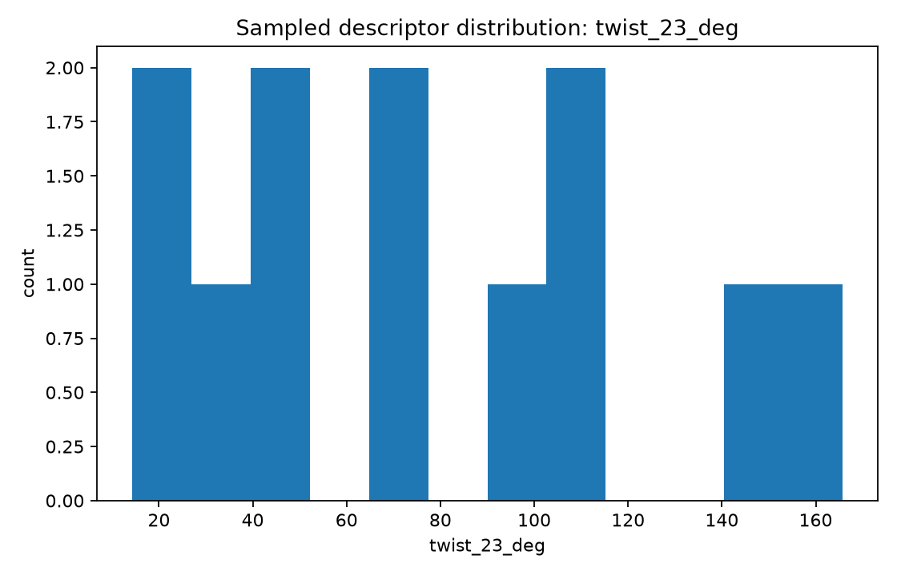
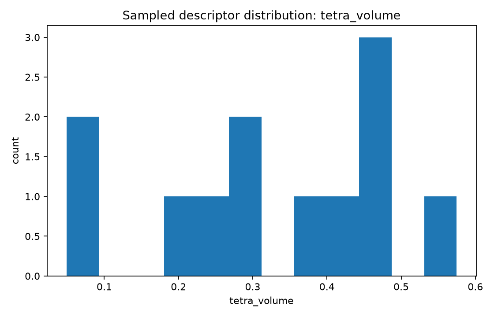

Focus: list a broad parameter inventory, generate initial synthetic geometry instances, and graph several descriptor distributions.
Total samples: 12
center_distance_12 — Normalized adjacent joint-center distance L12/Lrefcenter_distance_23 — Normalized adjacent joint-center distance L23/Lrefcenter_distance_34 — Normalized adjacent joint-center distance L34/Lreftwist_12_deg — Angle between consecutive axes near joints 1 and 2twist_23_deg — Angle between consecutive axes near joints 2 and 3twist_34_deg — Angle between consecutive axes near joints 3 and 4common_normal_13 — Shortest separation between selected nonadjacent axes 1 and 3common_normal_24 — Shortest separation between selected nonadjacent axes 2 and 4offset_1 — Signed offset along axis 1 to a common-normal constructionoffset_2 — Signed offset along axis 2 to a common-normal constructionaxis_to_center_1 — Distance from selected revolute axis 1 to an opposite joint centeraxis_to_center_2 — Distance from selected revolute axis 2 to an opposite joint centertetra_volume — Signed normalized tetrahedral volume built from four reference pointscoplanarity_residual — Near-zero indicates nearly planar center geometrychirality — Right- or left-handed center geometry flaghas_intersection_pair — Boolean flag for exact pairwise axis intersectionhas_mirror_symmetry — Boolean flag for mirror-symmetric construction


| Sample | Family | Seed | L12 | L23 | twist23 | tetra volume |
|---|---|---|---|---|---|---|
| uuur_000 | UUUR | 262388 | 1.067 | 1.675 | 110.1 | 0.449 |
| uuur_001 | UUUR | 7617771 | 2.225 | 1.056 | 110.6 | 0.376 |
| uuru_000 | UURU | 5895501 | 1.837 | 1.429 | 37.5 | 0.404 |
| uuru_001 | UURU | 477714 | 2.415 | 1.694 | 14.4 | 0.302 |
| uruu_000 | URUU | 6612377 | 1.832 | 2.075 | 146.4 | 0.480 |
| uruu_001 | URUU | 6931894 | 1.200 | 0.654 | 26.9 | 0.049 |
| usrr_000 | USRR | 9696151 | 0.597 | 0.864 | 73.5 | 0.084 |
| usrr_001 | USRR | 1352555 | 2.182 | 0.890 | 42.4 | 0.465 |
| ursr_000 | URSR | 6234996 | 0.696 | 1.920 | 74.5 | 0.296 |
| ursr_001 | URSR | 4434945 | 0.699 | 1.362 | 43.5 | 0.196 |
| urrs_000 | URRS | 9378825 | 0.836 | 1.699 | 94.3 | 0.575 |
| urrs_001 | URRS | 3372001 | 1.841 | 2.244 | 165.7 | 0.266 |
| Criterion | Sample | Family | L12 | twist23 | tetra volume |
|---|---|---|---|---|---|
| min center_distance_12 | usrr_000 | USRR | 0.597 | 73.5 | 0.084 |
| max center_distance_12 | uuru_001 | UURU | 2.415 | 14.4 | 0.302 |
| min twist_23_deg | uuru_001 | UURU | 2.415 | 14.4 | 0.302 |
| max twist_23_deg | urrs_001 | URRS | 1.841 | 165.7 | 0.266 |
| min tetra_volume | uruu_001 | URUU | 1.200 | 26.9 | 0.049 |
| max tetra_volume | urrs_000 | URRS | 0.836 | 94.3 | 0.575 |